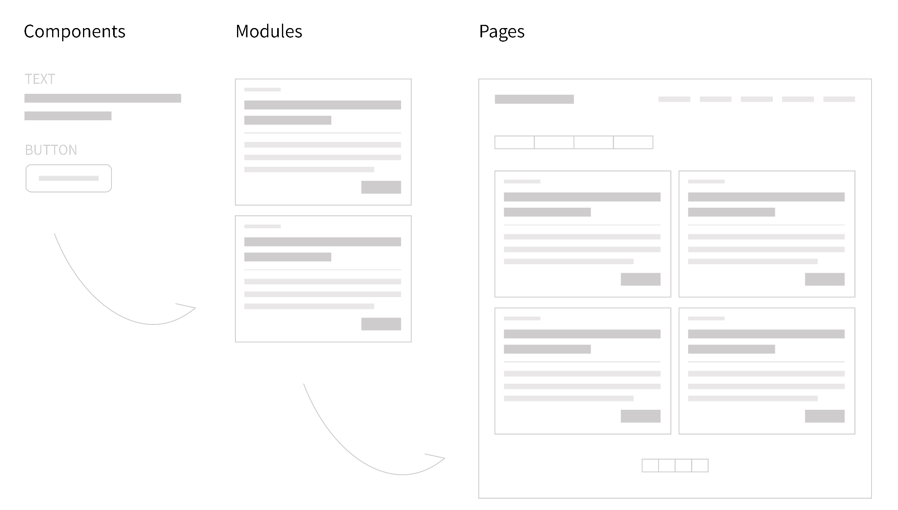

<!DOCTYPE html>
<html lang="zh-TW">

<head>
  <meta charset="UTF-8">
  <meta http-equiv="X-UA-Compatible" content="IE=edge">
  <meta name="viewport" content="width=device-width, initial-scale=1.0">
  <link href="https://cdn.jsdelivr.net/npm/bootstrap@5.0.0-beta3/dist/css/bootstrap.min.css" rel="stylesheet"
    integrity="sha384-eOJMYsd53ii+scO/bJGFsiCZc+5NDVN2yr8+0RDqr0Ql0h+rP48ckxlpbzKgwra6" crossorigin="anonymous">
  <link rel="stylesheet" href="css/style.css">

  <script src="https://cdn.jsdelivr.net/npm/bootstrap@5.0.0-beta3/dist/js/bootstrap.bundle.min.js"
    integrity="sha384-JEW9xMcG8R+pH31jmWH6WWP0WintQrMb4s7ZOdauHnUtxwoG2vI5DkLtS3qm9Ekf"
    crossorigin="anonymous"></script>
  <title>投資顧問官網 | chiwen's profolio</title>
</head>

<body>
  <!-- header -->
  <nav class="navbar navbar-expand-lg navbar-light p-4">
    <div class="container-fluid">
      <a class="navbar-brand" href="index.html"> 7 5 1 4 &nbsp; Profolio</a>
      <button class="navbar-toggler" type="button" data-bs-toggle="collapse" data-bs-target="#navbarText"
        aria-controls="navbarText" aria-expanded="false" aria-label="Toggle navigation">
        <span class="navbar-toggler-icon"></span>
      </button>
    </div>
  </nav>

  <!-- key vision -->
  <div id="carouselExampleSlidesOnly" class="carousel slide" data-bs-ride="carousel">
    <div class="carousel-inner">
      <div class="carousel-item active">
        
      </div>
    </div>
    <div class="text">
      <h1>投資顧問官網</h1>
      <span>UI / 響應式切版</span><br>
      <a class="btn btn-outline-light mt-3" href="https://newcim.capital.com.tw/newsite/index" target='_blank'>查看網頁</a>
    </div>
  </div>

  <!-- main   -->
  <main class="p-5 px-0 d-flex pb-0">
    <div class="pe-4">
      <span class="d-inline-block fs-6 fst-italic">專案背景 - </span>
      <p class="py-2 text-secondary">原先的投資顧問官網已經是20年前的網站，除了程式語言太老舊，隨著操作習慣的改變，為了提供客戶更專業的感受，因此翻新證券投資官網。
      </p>

      <span class="mt-4 d-inline-block fs-6 fst-italic">專案說明 - </span>
      <p class="py-2 text-secondary">投顧網站由專業分析師提供每日盤勢、重大新聞、產業及個股第一手消息，透過即時行動服務，有效掌握全球市場脈動，豐富的講座議題！
      </p>
      
      <h6 class="p-2">
        <ul class="mb-4">
          <span class="d-inline-block title">系統模組化應用</span>
          <li class="text-secondary"><mark>Adobe XD</mark> 增加顏色、文字到資產，模組化的方式設計介面，有一套固定的 guideline ，後續新增功能時僅需堆疊模組，能維持整體一致性。</li>
          <li class="text-secondary"><mark>SCSS</mark> 以 OOCSS 模組化的概念將樣式和空間架構分離，降低重複高的程式碼，易於後續調整或維護。</li>
          <li class="text-secondary"><mark>Angular</mark>網站僅生成一個 HTML 檔案，動態替換已經被模組化的各物件，除了可以重複應用於不同場景，還能避免一次大量載入所有網頁內容，導致要耗費效能要下載很久。
          </li>
        </ul>
        
      </h6>
    </div>

    <!-- tools -->
    <div>
      <span class="d-inline-block p-3 my-4 ms-5 fs-6 fst-italic bg-light tools">Tools - <br>Illustrator . Angular . SCSS . RWD . Git</span>
    </div>
  </main>

  <picture>
    
  </picture>

  <!-- footer -->
  <footer class="p-4 pb-5 text-center">
    <a class="btn btn-secondary" href="https://newcim.capital.com.tw/newsite/index" target="_blank"> 查看網頁 </a>
    <a class="btn btn-outline-secondary position-absolute end-0 me-5 d-inline-block" href="page8.html">前往下一個專案</a>
  </footer>

</body>

</html>